Цена реставрации стула
Небольшому ремонту может хватить склейки. Когда пропала часть ножки или разрушено сиденье, к цене прибавляются столярная работа и обивка. На снимках показаны разные состояния стульев.

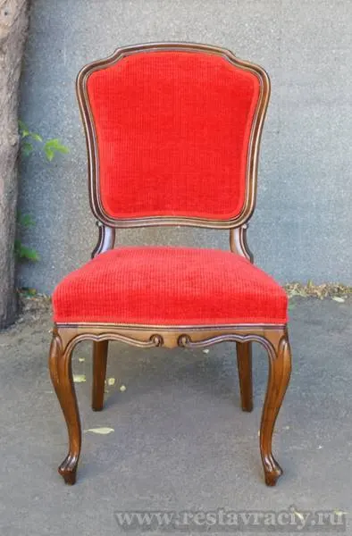
Примеры отдельных операций
Для расшатанного стула в этом разборе отдельно оценена склейка — 5 000 ₽. Смена ткани без замены наполнителя указана по 2 000 ₽ за одну деталь, сиденье или мягкую спинку.
Обновление лака, ремонт сломанной ножки и восполнение резьбы меняют состав работ. Общий прайс за 2026 год и примеры из этой статьи относятся к разным объёмам заказа.
Данные мастерской
| Стул | Мелкий ремонт | Полная реставрация с переклейкой и заменой лака | Восстановление из руинированного состояния |
|---|---|---|---|
| Жесткий деревянный стул | 10 т.р. | 10-15т.р. | от 15 т.р. |
| Мягкий стул или полу кресло | 15 т.р. | 15-20т.р. | от 20 т.р. |
| Старинный пружинный стул с морской травой и конским волосом | 15-20 т.р. | 20-25т.р. | Договорная |
| В стиле Ампир, классицизм, полировка шеллаком | до 40 т.р. |
Видеозаписи мастерской
О чём рассказывает мастерская
- Ценообразование реставрации
- Сколько стоит реставрация стула из дерева?
- Почему реставрируют старые стулья?
- Сколько стоит покрасить стул?
- Оценить стоимость реставрации стульев
- История стула
Фотографии и детали


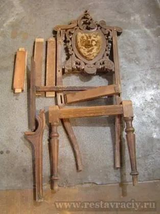
Открыть снимок у мастерской

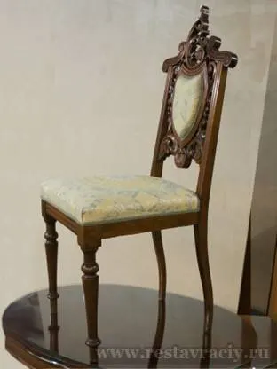
Открыть снимок у мастерской

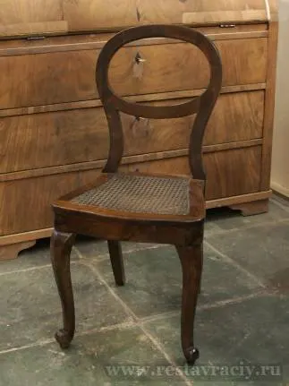
Открыть снимок у мастерской

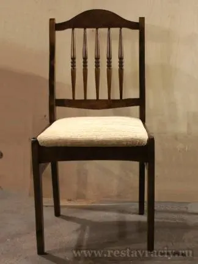
Открыть снимок у мастерской

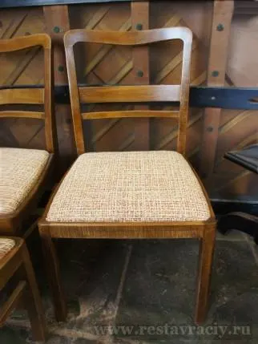
Открыть снимок у мастерской

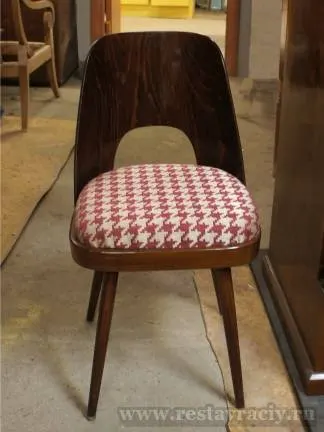
Открыть снимок у мастерской

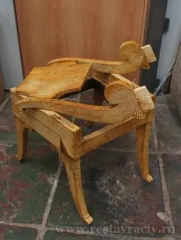
Открыть снимок у мастерской

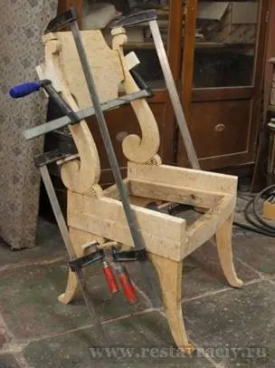
Открыть снимок у мастерской

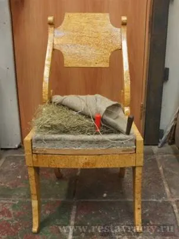
Открыть снимок у мастерской

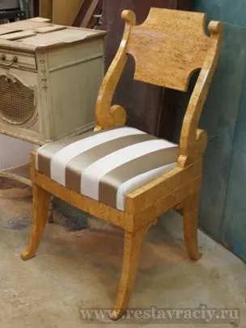
Открыть снимок у мастерской

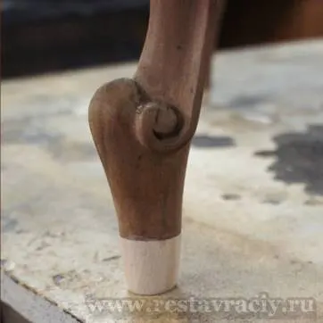
Открыть снимок у мастерской

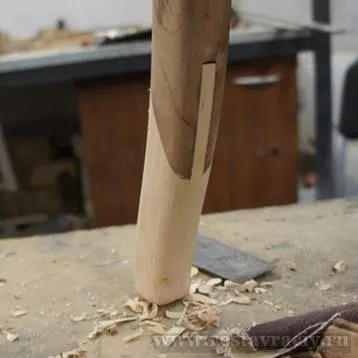
Открыть снимок у мастерской

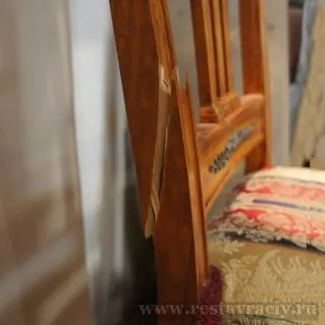
Открыть снимок у мастерской

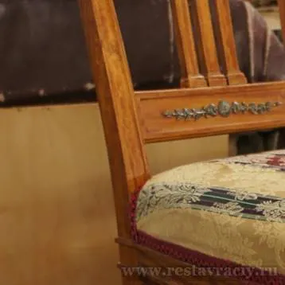
Открыть снимок у мастерской

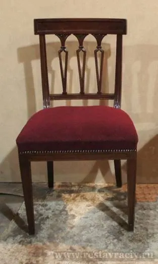
Открыть снимок у мастерской

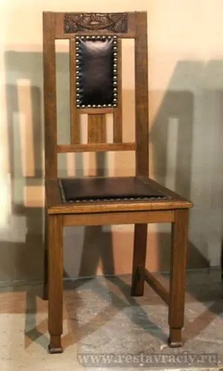
Открыть снимок у мастерской

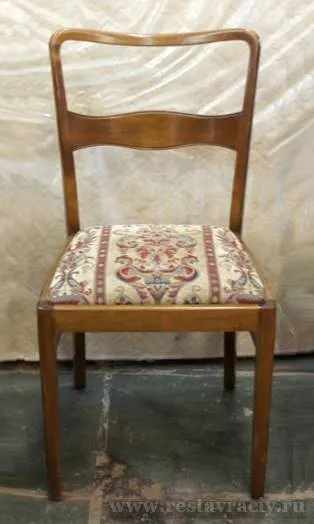
Открыть снимок у мастерской

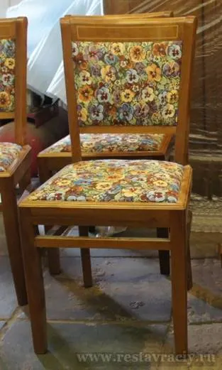
Открыть снимок у мастерской
Посмотреть снимки с сайта мастерской 3
Оригинальные фотографии откроются здесь с сайта мастерской.
 Открыть снимок у мастерской
Открыть снимок у мастерской  Открыть снимок у мастерской
Открыть снимок у мастерской  Открыть снимок у мастерской
Открыть снимок у мастерской Есть похожая вещь?
Подберите ракурсы для предварительной оценки.